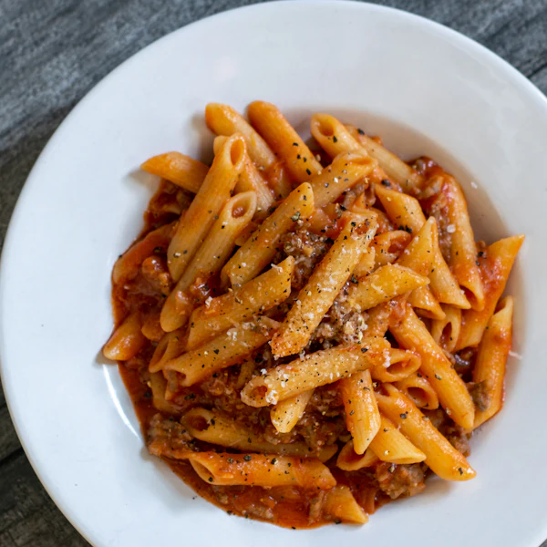
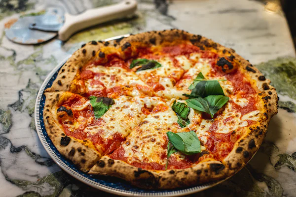
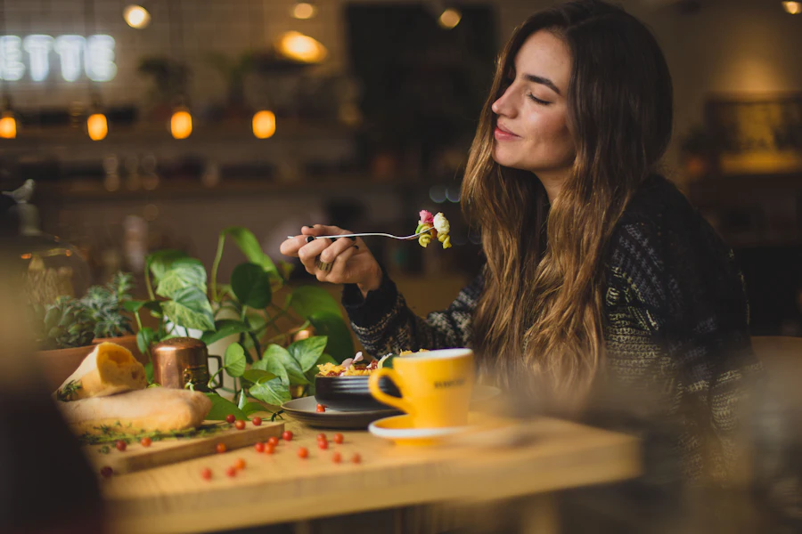

La carta
Die Pasta machen wir jeden Morgen selbst. Preise in Euro.
Antipasti
- Bruschetta al pomodoro7,50Tomaten, Knoblauch, Basilikum, Olivenöl
- Burrata11,50Kirschtomaten, Rucola, Basilikumöl
- Vitello tonnato12,90Kalbfleisch, Thunfischsauce, Kapern
Pasta della casa
- Penne al ragù14,50Rinderragout, San-Marzano-Tomaten, Parmigianoheute empfohlen
- Farfalle al pesto15,90Pesto genovese, Kirschtomaten, Rucola
- Cacio e pepe13,90Pecorino romano, schwarzer Pfeffer
- Tagliatelle ai funghi17,50Steinpilze, Petersilie, Butter


Pizza dal forno
- Margherita DOP12,00Fior di latte, Basilikum, Steinofen
- Diavola13,50Scharfe Salami, Tomaten, Mozzarella
- Quattro formaggi14,00Vier Käse, Walnüsse
Dolci
- Tiramisù della Nonna7,00Mascarpone, Espresso, Kakao
- Panna cotta6,50Waldbeeren
- Affogato5,50Vanilleeis, heißer Espresso

Eine Familie. Ein Ofen. Viele Abende.
Was als kleine Küche mit sechs Tischen begann, ist heute ein Treffpunkt für alle, die gutes Essen und lange Gespräche lieben. Die Rezepte sind dieselben geblieben.
„Kochen ist Liebe, die man schmecken kann.“
Wir freuen uns auf dich
- Di – Sa
- 17:30 – 23:00 Uhr
- So
- 12:00 – 22:00 Uhr
- Mo
- Ruhetag
Beispielweg 5, 79098 Freiburg
tisch@trattoria-lume.de